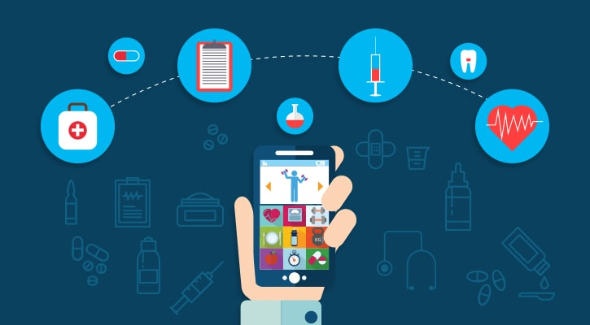

IOT Medical and Healthcare
The healthcare industry is in a state of great despair. Healthcare services are costlier than ever, global population is aging and the number of chronic diseases are on a rise.

What we are approaching is a world where basic healthcare would become out of reach to most people, a large section of society would go unproductive owing to old age and people would be more prone to chronic disease.
Isn’t it the end of the world we suspected? Whatever, IoT app development is at your rescue.
While technology can’t stop the population from ageing or eradicate chronic diseases at once, it can at least make healthcare easier on a pocket and in term of accessibility.
Medical diagnostic consumes a large part of hospital bills. Technology can move the routines of medical checks from a hospital (hospital-centric) to the patient’s home (home-centric).
The right diagnosis will also lessen the need of hospitalization.
A new paradigm, known as the Internet of Things (IoT), has an extensive applicability in numerous areas, including healthcare.
The full application of this paradigm in healthcare area is a mutual hope because it allows medical centers to function more competently and patients to obtain better treatment.
With the use of this technology-based healthcare method, there are unparalleled benefits which could improve the quality and efficiency of treatments and accordingly improve the health of the patients.
Benefits
Simultaneous reporting and monitoring
Real-time monitoring via connected devices can save lives in event of a medical emergency like heart failure, diabetes, asthma attacks, etc.
With real-time monitoring of the condition in place by means of a smart medical device connected to a smartphone app, connected devices can collect medical and other required health data and use the data connection of the smartphone to transfer collected information to a physician.
Center of Connected Health Policy conducted a study that indicates that there was a 50% reduction in 30-day readmission rate because of remote patient monitoring on heart failure patients.
The IoT device collects and transfers health data: blood pressure, oxygen and blood sugar levels, weight, and ECGs.
These data are stored in the cloud and can be shared with an authorized person, who could be a physician, your insurance company, a participating health firm or an external consultant, to allow them to look at the collected data regardless of their place, time, or device.
End-to-end connectivity and affordability
IoT can automate patient care workflow with the help healthcare mobility solution and other new technologies, and next-gen healthcare facilities.
IoT in healthcare enables interoperability, machine-to-machine communication, information exchange, and data movement that makes healthcare service delivery effective.
Connectivity protocols: Bluetooth LE, Wi-Fi, Z-wave, ZigBee, and other modern protocols, healthcare personnel can change the way they spot illness and ailments in patients and can also innovate revolutionary ways of treatment.
Consequently, technology-driven setup brings down the cost, by cutting down unnecessary visits, utilizing better quality resources, and improving the allocation and planning.
Data assortment and analysis
Vast amount of data that a healthcare device sends in a very short time owing to their real-time application is hard to store and manage if the access to cloud is unavailable.
Even for healthcare providers to acquire data originating from multiple devices and sources and analyze it manually is a tough bet.
IoT devices can collect, report and analyses the data in real-time and cut the need to store the raw data.
This all can happen overcloud with the providers only getting access to final reports with graphs.
Moreover, healthcare operations allow organizations to get vital healthcare analytics and data-driven insights which speed up decision-making and is less prone to errors.
Tracking and alerts
On-time alert is critical in event of life-threatening circumstances. Medical IoT devices gather vital data and transfer that data to doctors for real-time tracking, while dropping notifications to people about critical parts via mobile apps and other linked devices.
Reports and alerts give a firm opinion about a patient’s condition, irrespective of place and time.
It also helps make well-versed decisions and provide on-time treatment.
Thus, IoT enables real-time alerting, tracking, and monitoring, which permits hands-on treatments, better accuracy, apt intervention by doctors and improve complete patient care delivery results.
Remote medical assistance
In event of an emergency, patients can contact a doctor who is many kilometers away with a smart mobile apps.
With mobility solutions in healthcare, the medics can instantly check the patients and identify the ailments on-the-go.
Also, numerous healthcare delivery chains that are forecasting to build machines that can distribute drugs on the basis of patient’s prescription and ailment-related data available via linked devices.
IoT will Improve the patient’s care In hospital. This in turn, will cut on people’s expanse on healthcare
Research
IoT for healthcare can also be used for research purposes. It’s because IoT enables us to collect a massive amount of data about the patient’s illness which would have taken many years if we collected it manually.
This data thus collected can be used for statistical study that would support the medical research.
Thus, IoT don’t only saves time but also our money which would go in the research.
Thus, IoT has a great impact in the field of medical research. It enables the introduction of bigger and better medical treatments.
IoT is used in a variety of devices that enhance the quality of the healthcare services received by the patients.
Even the existing devices are now being updated by IoT by simply using embedding chips of a smart devices. This chip enhances the assistance and care that a patient requires.
Challenges
Data security & privacy
One of the most significant threats that IoT poses is of data security & privacy. IoT devices capture and transmit data in real-time.
However, most of the IoT devices lack data protocols and standards.
In addition to that, there is significant ambiguity regarding data ownership regulation.
All these factors make the data highly susceptible to cybercriminals who can hack into the system and compromise Personal Health Information (PHI) of both patients as well as doctors.
Cybercriminals can misuse patient’s data to create fake IDs to buy drugs and medical equipment which they can sell later.
Hackers can also file a fraudulent Insurance claim in patient’s name.
Integration: multiple devices & protocols
Integration of multiple devices also causes hindrance in the implementation of IoT in the healthcare sector.
The reason for this hindrance is that device manufacturers haven’t reached a consensus regarding communication protocols and standard.
So, even if the variety of devices are connected; the difference in their communication protocol complicates and hinders the process of data aggregation.
This non-uniformity of the connected device’s protocols slows down the whole process and reduces the scope of scalability of IoT in healthcare.
Data overload & accuracy
As discussed earlier, data aggregation is difficult due to the use of different communication protocols & standards.
However, IoT devices still record a ton of data. The data collected by IoT devices are utilized to gain vital insights.
However, the amount of data is so tremendous that deriving insights from it are becoming extremely difficult for doctors which, ultimately affects the quality of decision-making.
Moreover, this concern is rising as more devices are connected which record more and more data.
Cost
Surprised to see cost considerations in the challenge sections? I know most of you would be; but the bottom line is: IoT has not made the healthcare facilitates affordable to the common man yet.
The boom in the Healthcare costs is a worrying sign for everybody especially the developed countries.
The situation is such that it gave rise to “Medical Tourism” in which patients with critical conditions access healthcare facilities of the developing nations which costs them as less as one-tenth. IoT in healthcare as a concept is a fascinating and promising idea.
However, it hasn’t solved the cost considerations as of now. To successfully implement IoT app development and to gain its total optimization the stakeholders must make it cost effective otherwise it will always remain out of everyone’s reach except the people from the high class.
Applications of IoT in healthcare
The rise of IoT is exciting for everybody due to its different scope of use in various sectors. In Healthcare it has several applications. IoT in healthcare helps in:

- Reducing emergency room wait time
- Tracking patients, staff, and inventory
- Enhancing drug management
- Ensuring availability of critical hardware
IoT has also introduced several wearables & devices which has made lives of patients comfortable. These devices are as follows.
Hearables
Hearables are new-age hearing aids which have completely transformed the way people who suffered hearing loss interact with the world.
Nowadays, hearables are compatible with Bluetooth which syncs your smartphone with it.
It allows you to filter, equalize and add layered features to real-world sounds. Doppler Labs is the most suitable example of it.
Ingestible sensors
Ingestible sensors are genuinely a modern-science marvel. These are pill-sized sensors which monitor the medication in our body and warns us if it detects any irregularities in our bodies.
These sensors can be a boon for a diabetic patient as it would help in curbing symptoms and provide with an early warning for diseases. Proteus Digital Health is one such example.
Moodables
Moodables are mood enhancing devices which help in improving our mood throughout the day. It may sound like science fiction, but it’s not far from reality.
Thync and Halo Neurosciences are already working on it and has made tremendous progress.
Moodables are head-mounted wearables that send low-intensity current to the brain which elevates our mood.
Computer vision technology
Computer vision technology along with AI has given rise to drone technology which aims to mimic visual perception and hence decision making based on it.
Drones like Skydio use computer vision technology to detect obstacles and to navigate around them.
This technology can also be used for visually impaired people to navigate efficiently.
Healthcare charting
IoT devices such as Audemix reduce much manual work which a doctor has to do during patient charting.
It is powered by voice commands and captures the patient’s data.
It makes the patient’s data readily accessible for review. It saves around doctors’ work by 15 hours per week.
See Also: IOT Medical and Healthcare